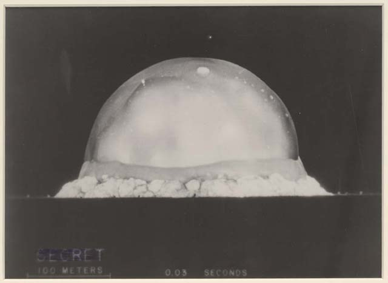

On This Day: July 16
On this day (July 16) in 1945 the atomic age began, quite literally, with a bang. The Manhattan Project detonated the world's first atomic bomb in the 'Trinity' test. On the same day other notable and connected events occurred with implications for humanity and Computational Fluid Dynamics (CFD).
Trinity TestCourtesy of The Library of Congress
With the advent of nuclear weapons, world powers raced to produce vehicles to deliver them. By the 1950's the favored delivery vehicle was the unmanned intercontinental ballistic missile (ICBM) – a direct descendant of the V2 rocket from World War II. The nuclear warheads were launched on a ballistic trajectory into space and re-entered Earth's atmosphere above Mach 20.
Travelling at such speeds during re-entry meant the warheads encountered a mixture of supersonic and subsonic flow regimes around their blunt noses. Either flow regime on its own could be simulated using primitive (by today's standards) analytic methods. But combined, the flow regimes posed a near intractable obstacle for flow modeling. Physical experiments under re-entry conditions were difficult and dangerous, so numerical modeling was essential for weapon design.
Finally, in 1966, Moretti and Abbett in "A Time-Dependent Computational Method for Blunt Body Flows" came up with the counterintuitive idea to use time-marching to model steady-state supersonic and subsonic flows simultaneously. Thus was born the basis of practical CFD for all flow regimes.
1957
On this day (July 16) in 1957 the US transcontinental speed record between California and New York was set by John Glenn. He covered the route in 3 hours, 23 minutes and 8 seconds flying an F-8 Crusader. Earlier in 1956 the same supersonic airplane set a world Level Flight Speed Record of 1015mph. This airplane was not party to the CFD revolution but it did benefit from the latest analytical tools of the day such as the supersonic area rule.
Vought F8 Crusader
John Glenn went on to become the first American to orbit the Earth and return safely aboard Friendship 7 on February 20, 1962. The Atlas booster that lifted his Mercury capsule into orbit was closely related to the Atlas ICBM. The shape of the blunt heat shield used during his re-entry into the Earth's atmosphere was based on the same principles used to design the casing of nuclear warheads. Glenn returned to orbit in 1998 at age 77 aboard the Space Shuttle Discovery. The Space Shuttle benefited from extensive CFD simulations.
1969
On this day (July 16) in 1969 the Apollo 11 mission launched from Kennedy Space Center, Florida on a Saturn V rocket with Michael Collins at the controls of the command module. Four days later Neil Armstrong announced, "Houston, Tranquility Base here. The Eagle has landed." Then he and Buzz Aldrin became the first humans to walk on the Moon – framed by Armstrong's phrase: "That's one small step for [a] man, one giant leap for mankind."
Aerodynamic devices, such as wings, that counter gravity on Earth and allow flight are useless without a gaseous atmosphere. On the Moon the Lunar Module (named Eagle) relied solely on rocket thrusters for control during its 'flight'.
 Buzz Aldrin and Apollo 11 Lunar ModuleCourtesy of NASA
Buzz Aldrin and Apollo 11 Lunar ModuleCourtesy of NASA
Currently the US and China are independently planning manned missions to the Moon and possibly on to Mars. CFD will be an indispensible tool in the design of the launch and re-entry vehicles. Also CFD will play an important role in the design of the life support and electronics cooling systems.
1994
On this day (July 16) in 1994 Comet Shoemaker-Levy 9 collided with Jupiter causing quite a show. The robotic Galileo spacecraft was rapidly approaching Jupiter for its 1996 planned exploration of the Jovian system and had a ringside seat of the collision. Seven years previous, Galileo began its odyssey with a launch from the shuttle Atlantis' cargo bay on October 18, 1989.
 Artist's Impression of the Galileo Spacecraft Atmospheric ProbeCourtesy of NASA
Artist's Impression of the Galileo Spacecraft Atmospheric ProbeCourtesy of NASA
Five months prior to its arrival at Jupiter, Galileo released its atmospheric probe. The probe used Jupiter's dense atmosphere to slow from 47 km/s to subsonic speed in less than 2 minutes, enduring immense heat equivalent to that of a thermonuclear fireball. It then deployed a parachute and collected atmospheric data for 58 minutes before succumbing to heat and high pressure as expected.
Galileo was also deliberately crashed into Jupiter's atmosphere and vaporized in order to "...eliminate any chance of an unwanted impact between the spacecraft and Jupiter’s moon Europa, which Galileo discovered is likely to have a subsurface ocean," according to the official NASA press release.
On Earth it was nearly impossible to physically replicate the conditions experienced by the probe and the comet. However, CFD could and did simulate Jupiter's atmosphere. CFD was used to predict the effect of the comet's impact and to aid in understanding the descent of the probe.
In a single day (July 16) we've traveled through time from the Manhattan Project, to John Glenn, to the Moon, and finally to Jupiter. Who'd have thought CFD could be so influential?
Feedback
Questions? Ideas? Problems?

Recent blog posts
- CFD Simulates Distant Past
- Background on the Caedium v6.0 Release
- Long-Necked Dinosaurs Succumb To CFD
- CFD Provides Insight Into Mystery Fossils
- Wind Turbine Design According to Insects
- Runners Discover Drafting
- Wind Tunnel and CFD Reveal Best Cycling Tuck
- Active Aerodynamics on the Lamborghini Huracán Performante
- Fluidic Logic
- Stonehenge Vortex Revealed as April Fools' Day Distortion Field
 Get our Blog feed
Get our Blog feed